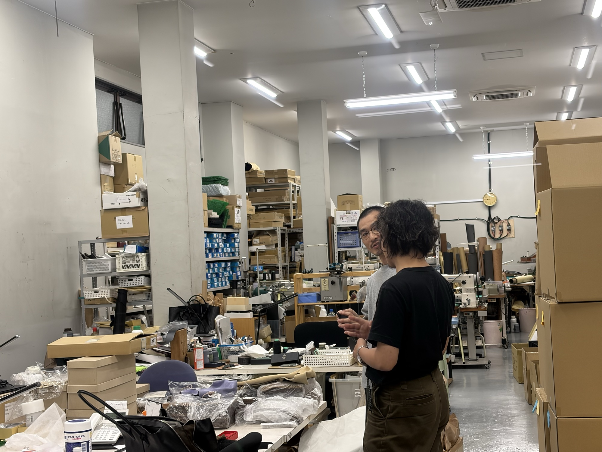

集客・マーケティング
Webサイトや広告、SNSの運用を通じて、問い合わせや来店につながる仕組みをつくり、運用まで担います。

BUSINESS 02 — SME BPO
中小企業の多くは、少ない人数で営業から経理までを回しています。本業に集中したくても、集客や採用、管理業務に時間を取られてしまう。そうした悩みを、私たちは支援の現場で何度も耳にしてきました。
中小企業BPO事業では、業績を伸ばすために必要な実務を、外注先としてではなく社内チームの一員として引き受けます。仕組みをつくって終わりにせず、日々の運用まで担います。
WHAT WE DO
Webサイトや広告、SNSの運用を通じて、問い合わせや来店につながる仕組みをつくり、運用まで担います。
営業先のリスト作成から商談の設定、提案資料の作成まで、成果につながる営業活動を代行します。
月次の数字の整理や資金繰り表の作成など、経営の判断に必要な情報を整えます。
日々の定型業務を見直し、AIやクラウドツールを使って手間と時間を減らします。
店舗の待ち時間や作業の手順を見直し、少ない人数でも回る運営をつくります。
ECサイトの運営からモールへの出店、商品ページの改善まで、ネットでの販売を伸ばす実務を担います。
HOW WE WORK
現在の業務の流れと数字をうかがい、どこに手が足りていないかを一緒に整理します。
引き受ける業務の範囲と体制、期間、費用をご提案します。
まずは小さな範囲から始め、進め方と連絡の取り方を固めます。
毎月の数字を共有しながら改善を重ね、必要に応じて引き受ける範囲を広げます。
OUR EXPERIENCE
これまでに支援した企業の業種と、取り組んだテーマの一部です。
OTHER BUSINESS